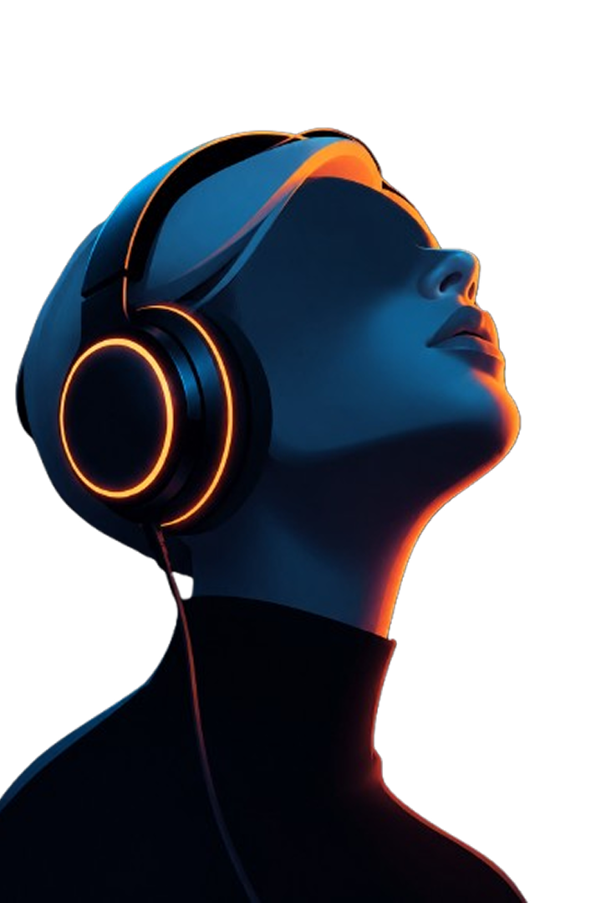
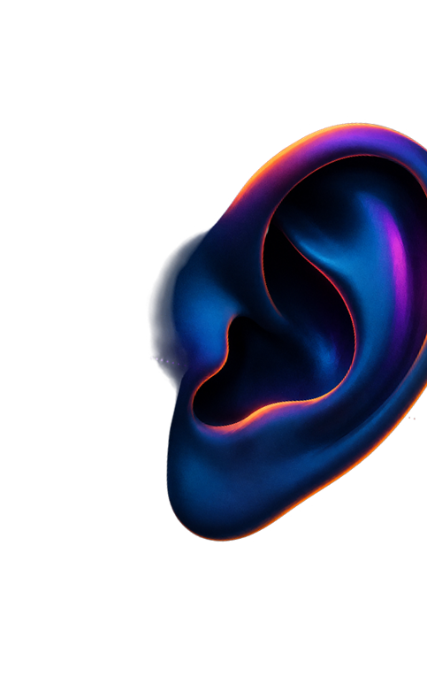

¿PODEMOS RECONOCER UNA CANCION HECHA CON IA?
La inteligencia artificial ya es capaz de crear canciones completas: puede generar voces, melodías, letras e instrumentos en cuestión de segundos. Por esto, esta pregunta es cada vez mas dificil de resolver
